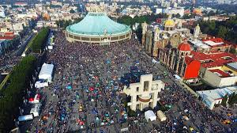
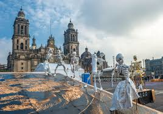
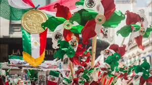

COSTUMBRES
La Ciudad de México es una de las ciudades más importantes del mundo desde el punto de vista cultural,
y sus numerosos festivales se encuentran entre las mejores formas de empaparse del folklor
local. Si bien los festivales pueden ser bastante variados, muchos tienen como tema el baile
y la comida.
Con tantas festividades que se llevan a cabo en la ciudad, seguramente encontrarás
una celebración cuando estés en la ciudad, ya sea un festival indígena,
un festival histórico, una celebración de la independencia o incluso un festival de cine.
1: Día de la Virgen de Guadalupe

El Día de la Virgen de Guadalupe es una fiesta religiosa y nacional en honor a la Virgen. Cada 12 de diciembre hay desfiles, fuegos artificiales y fiestas, además de una misa especial. La celebración principal es en las iglesias locales, aunque siempre puedes participar en los desfiles que siguen, incluso si no asistes a una misa.
2: Día de Muertos

El Día de Muertos es una celebración que se lleva a cabo el 1 y 2 de noviembre, en la que se honra a quienes ya no están entre nosotros y presenta coloridas decoraciones, ofrendas, pintura facial y desfiles. Si bien el Día de los Muertos es el 2, las celebraciones se realizan durante dos días a partir del 1 de noviembre.
Cuando participes en esta celebración, encontrarás mucho que hacer, como ver el desfile por la Ciudad de México. En el Zócalo, que es la plaza principal, también encontrarás coloridas ofrendas, que son altares que honran a los muertos. Pueden ser bastante grandes y algunas incluso tienen música y bailes.
3: Día de la Independencia

El Día de la Independencia en México es el 15 de septiembre y se celebra de manera muy similar a como se haría en otros países, con colores patrióticos, actuaciones musicales, fiestas y fuegos artificiales. Verde, blanco y rojo pintan la ciudad entre las decoraciones, las luces y la ropa de la gente.
Como ya es costumbre en la celebración del Día de la Independencia, el presidente da el grito desde el Palacio de Gobierno en la ciudad. Entre las festividades, encontrarás una variedad de deliciosa comida tradicional que ofrecen los restaurantes y vendedores ambulantes, y las cantinas locales están llenas de mariachi y tequila.
4: Vive Latino

Vive Latino es un famoso festival de música que se lleva a cabo todos los años alrededor de marzo y abril, con artistas hispanohablantes nuevos y en evolución de Iberoamérica. Si bien aquí la música en español domina los escenarios, cuenta también con la presencia de algunos que otros cantantesy grupos extranjeros .
En realidad, los géneros que se exhiben aquí pueden ser bastante variados, aunque el reggae, el ska y la música rock tienden a predominar. Algunos de los artistas que se han presentado en el festival incluyen Enrique Bunbury, Miguel Ríos, Sepultura y Los Lobos, así como actuaciones en otros idiomas como The Chemical Brothers y Janes Addiction. El festival se lleva a cabo en el Foro Sol, al este de la Ciudad de México.